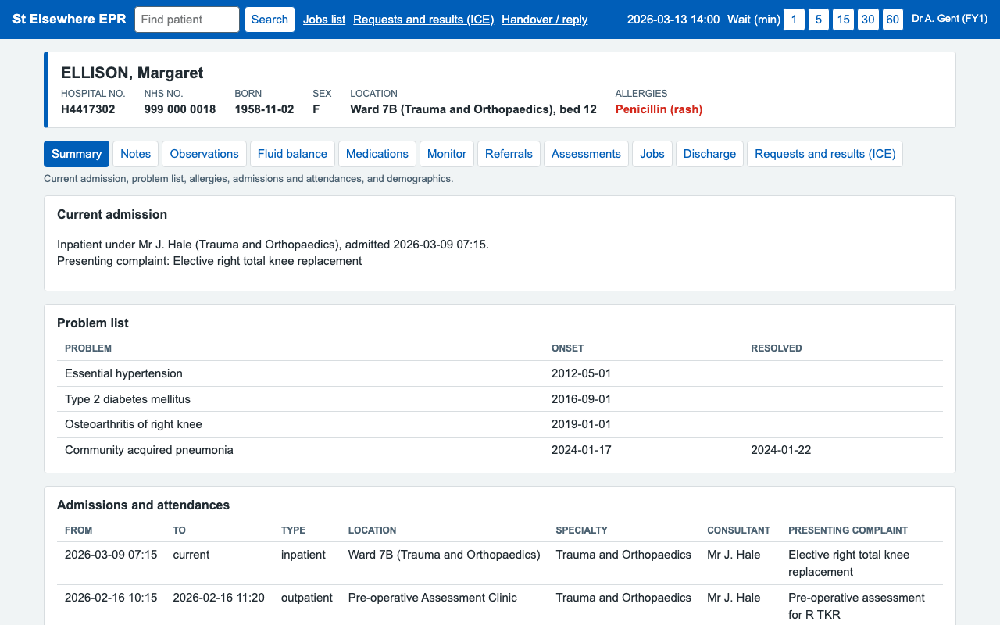
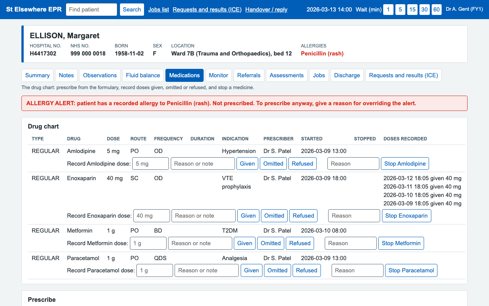
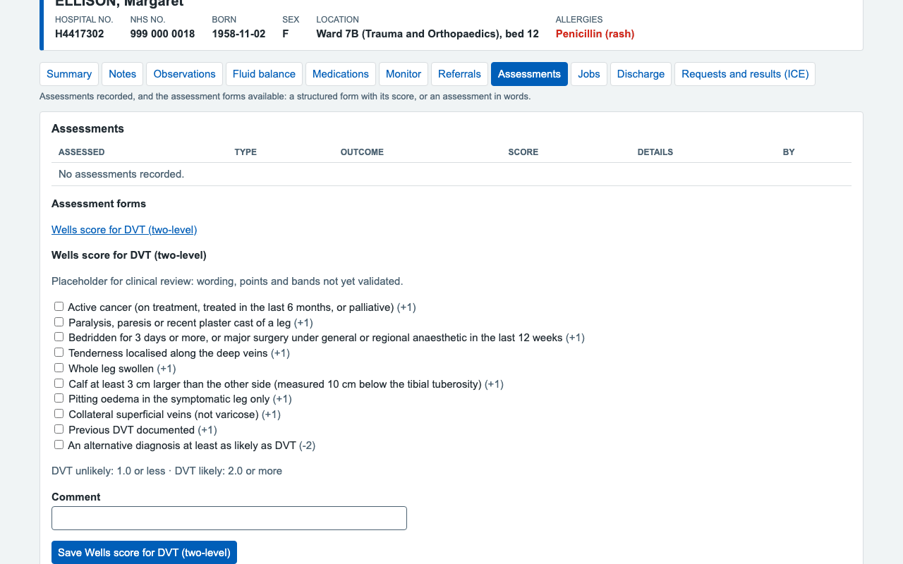
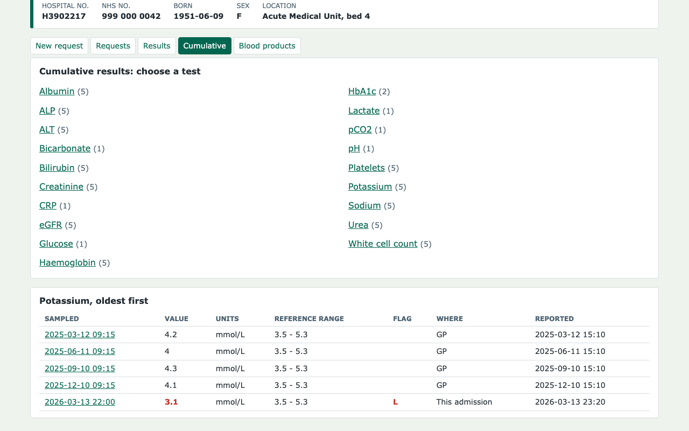

EPR-Bench
A synthetic, NHS-style electronic patient record for testing AI agents on the jobs junior doctors do: finding results, prescribing, requesting, referring and handing over. The same record can be worked through a JSON API or, with no API at all, through its web pages from screenshots, mouse and keyboard. Every patient is fictional.
What it is
A simulated hospital record with demographics, notes, observations with NEWS2, a drug chart with a full NHS dm+d formulary and prescribing alerts, a separate ICE-style requesting and results system, referral pathways with their own forms, structured assessments, a ward jobs list and discharge. Time passes only when the agent waits; results come back after a turnaround, scripted nurses give what is charted, teams answer referrals, and patients get worse or better according to what is done.
Each episode is marked by deterministic checks on the final state of the record, including an audit of what the agent did and was shown: no language model judges it. Every episode gets a tier (harmful, inactive, partial or complete), never a blended score, and a clinician is meant to read every one.




What the agents did
On 23 November 2026 two agent command-line products worked the five preview tasks on both routes, twice each: Claude
Code (on its default model that day, which it reported as claude-sonnet-5-5, and pinned to
claude-fable-5-2) and Codex CLI 0.171.0 on its default model. That is 60 episodes, marked again here with the
current rules.
| Task | Claude Code + Sonnet API | Claude Code + Sonnet browser | Claude Code + Fable API | Claude Code + Fable browser | Codex CLI API | Codex CLI browser |
|---|---|---|---|---|---|---|
| Low potassium nobody has sorted (judgement) | C C | P P | C C | C P | C C | C C |
| Potassium replacement, as instructed | C C | C C | C C | C C | C C | C C |
| Chest pain in resus, no plan handed over (judgement) | C C | C C | C C | C C | C C | C C |
| Activate PPCI and load, as instructed | C C | C C | C C | C C | C C | C C |
| Discharge request with an unexplained swollen calf (judgement) | C C | P P | C C | C C | C C | C C |
Low potassium
Asked only to "sort" a potassium of 3.1, every Codex run rechecked it first, then gave one dose with a same-day recheck; every Claude Code run started a course at once and rechecked the next morning. The three partial runs never signed off last night's result.
Chest pain in resus
All 24 runs activated primary PCI in time and none gave a nitrate to a hypotensive patient. They differed in whether they also called the ED senior, charted analgesia, and gave the antiplatelet loading dose before or after cardiology replied.
Discharge with a swollen calf
No agent discharged her. All twelve requested a leg Doppler and held the discharge; they differed in how they wrote down the reassessment, and in whether they waited four simulated hours for the scan and treated the clot it showed.
Full tables, denominators and the effort per route are in RESULTS.md. Every episode can be read action by action, with the agent's own screenshots, in the trajectory viewer.
Read these results with their limits
- These are agent products (their own prompts, loops and tools), not bare models. Codex's event stream does not name its model.
- Two repeats per cell on three draft cases: exploratory description, not a comparison or a ranking.
- Actions are not comparable across routes: an API call against a click or keystroke.
- Staff replies are scripted, and each agent chose how long to wait, so they saw different things.
- Only structured entries are marked: a Wells score written in prose is not a Wells form. A screenshot delivered to an agent does not show that the model attended to it.
- The cases were written by the developer and reviewed by one clinician; several marking rules are AI-proposed and await review (CLINICAL_DECISIONS.md). Nothing here says anything about clinical safety.
Run it
uv sync --all-extras
uv run playwright install chromium
uv run eprbench tasks
uv run eprbench serve preview-dvt-discharge-judgement --mode ui # http://127.0.0.1:8000
# a logged-in agent CLI on a case, through each route (subscription, no API key)
uv run eprbench run preview-hypok-judgement --agent claude --interface api --out-dir results/today
uv run eprbench run preview-hypok-judgement --agent codex --interface ui --out-dir results/today
# a person as a baseline, and the viewer
uv run eprbench serve preview-stemi-judgement --mode ui --user "Dr J. Smith (FY1)" --out-dir results/human
uv run eprbench view results/today --out today.htmlReview the cases
If you are a clinician, the most useful thing you can do is read the clinical decisions log and open an issue on any row you think is wrong, quoting its ID.